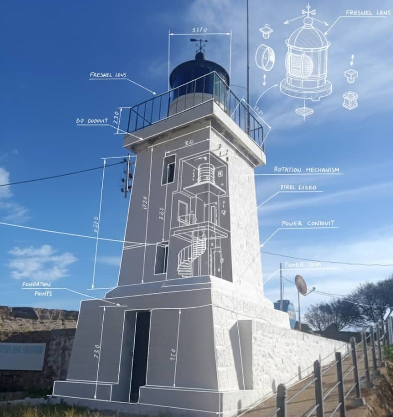

Quand la mer rencontre la lumière & Quand l'ingénieur change de cap
Des investigations techniques et relevés in situ, destinés à caractériser l’état des matériaux (maçonneries, mortiers, pièces métalliques) et la configuration structurelle des ouvrages ;
Des analyses et évaluations de chaque pathologie apparente selon les référentiels en vigueur, notamment les recommandations de conservation du patrimoine bâti ancien.
Phare Ilot des Singes
Des inspections visuelles détaillées de l’ensemble des éléments constitutifs du phare (tour, soubassement, lanterne, bâtiments annexes) ; Formuler des recommandations techniques